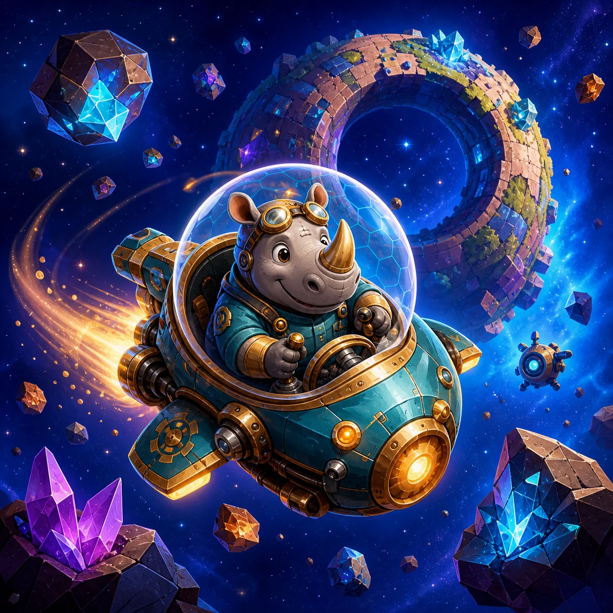

WeightPlay Blog
Ideas behind the games
Practical notes about making browser games, listening to players, and improving one detail at a time.
Latest
From the WeightPlay team
Engineering notes · 4 min read
A Language Dropdown Is Not Localization
Why a multilingual browser game must localize routes, dynamic states, Result screens, and accessibility copy—not only buttons.
Read article
Design notes · 4 min read
A Falling Game Is Really About the Next Landing
What Animal Skyspire Drop taught us about showing risk without taking the rotation decision away from the player.
Read article
Design notes · 4 min read
How to Teach Inertia Without Pausing the Game
What Space Rocks taught us about visible motion cues, forgiving openings, and letting recovery carry the lesson.
Read article
Game notes - 3 min read
The Mission Is Not Over When You Grab the Treasure
What playing Animal Moonlight Heist taught us about extraction routes, free retries, and resisting one risky detour.
Read article
Game notes - 3 min read
A Puzzle About Patience: Why One Pipe Turn Can Change Everything
What playing Panko's Bamboo Waterway taught us about tracing routes, using hints, and recovering from a bad turn.
Read article
Game notes · 4 min read
The Weapon Shoots by Itself. Your Job Is to Keep Moving.
What Animal Relic Hunters taught us about movement, enemy patterns, temporary upgrades, and staying in control.
Read article
Game notes · 4 min read
The Most Important Tile Is the Empty One
What Animal 2048 taught us about protecting space, making useful moves, and learning from a failed board.
Read article
Game notes · 4 min read
The Best Move Is Not Always an Attack
What a turn-based animal tactics game taught us about positioning, patience, and useful failure.
Read article
Game notes · 4 min read
Why Simple Is Hard: Playing Panko's Bus Jam
What a small bus puzzle taught us about order, risk, undo, and meaningful level changes.
Read articleBehind the scenes · 8 min read
Why We Built WeightPlay
How an original browser-game platform takes shape through small decisions, mobile play, and real player feedback.
Read article